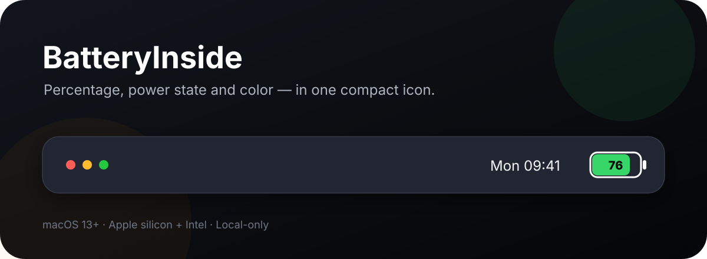
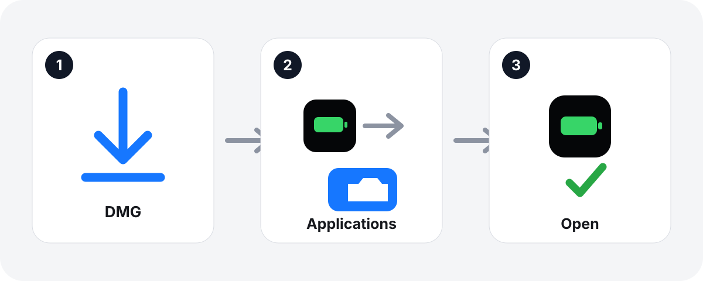
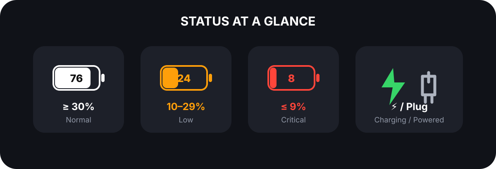
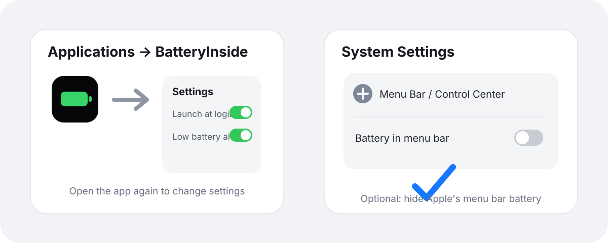
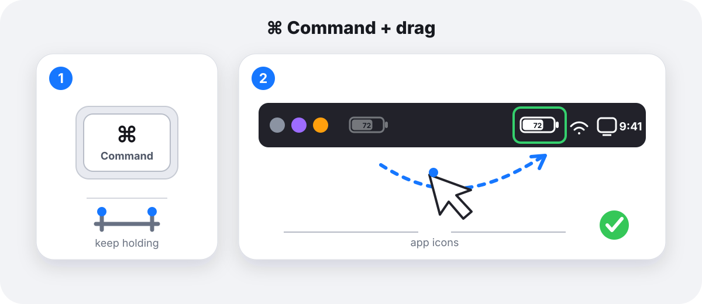

中文说明
安装

- 打开 DMG。
- 把“电池内显”拖到“应用程序”。
- 从 Finder → 应用程序打开“电池内显”。
如果提示无法验证开发者：先尝试打开一次，然后前往“系统设置 → 隐私与安全性”，找到应用提示并点击“仍要打开”。仅对从官方 GitHub Release 下载且 SHA-256 一致的文件这样操作。
状态

填充柱长度按 20.8 pt × 电量百分比连续变化；数字显示精确电量。≥30% 为白色，10%–29% 为橘黄色，≤9% 为红色。1% 约等于 0.208 pt，使用亚像素绘制，不需要100个整数像素。
完整替代系统图标

菜单栏指示器不可点击。请从“应用程序”再次打开应用，开启“登录时自动启动”。然后在较新 macOS 的“系统设置 → 菜单栏 → 菜单栏控制项 → 电池”关闭菜单栏显示；macOS 13–15 则前往“系统设置 → 控制中心 → 电池 → 在菜单栏中显示”。这只隐藏图标，不会删除系统电池功能。
移动并记住位置

- 按住 Command（⌘）。
- 保持按住并拖动菜单栏中的“电池内显”。
- 在其他第三方应用图标的右侧松开。
每台新电脑首次安装后操作一次。应用的稳定位置标识会让 macOS 在重新打开、重启和升级后恢复位置。系统保留项目不能由应用移动。
English guide
Install
- Open the DMG.
- Drag BatteryInside to Applications.
- Open BatteryInside from Finder → Applications.
If macOS cannot verify the developer: try opening the app once, then go to System Settings → Privacy & Security and click Open Anyway. Only do this for a file downloaded from the official GitHub Release with a matching SHA-256 checksum.
Status
Fill width changes continuously as 20.8 pt × percentage; the number shows the exact level. The bar is white at ≥30%, orange at 10%–29%, and red at ≤9%. Each 1% is about 0.208 pt, rendered with subpixels rather than requiring 100 integer pixels.
Replace Apple's menu bar icon
The indicator is not clickable. Reopen BatteryInside from Applications and enable Launch at Login. Then hide Apple's icon in System Settings → Menu Bar → Menu Bar Controls → Battery on newer macOS, or System Settings → Control Center → Battery → Show in Menu Bar on macOS 13–15. This only hides the icon; it does not remove macOS battery features.
Move and remember the position
- Hold Command (⌘).
- Keep holding and drag BatteryInside in the menu bar.
- Release it to the right of your other third-party app icons.
Do this once on each newly installed Mac. The stable position identity lets macOS restore it after reopening, restarting, and upgrading. Apps cannot move system-reserved items.
日本語ガイド
インストール
- DMGを開きます。
- BatteryInsideを「アプリケーション」へドラッグします。
- Finder → アプリケーションから開きます。
開発元を確認できない場合：一度アプリを開いた後、システム設定 → プライバシーとセキュリティから「このまま開く」を選びます。公式GitHub Releaseから入手し、SHA-256が一致するファイルだけに行ってください。
表示
バーの幅は 20.8 pt × パーセントで連続的に変化し、数字が正確な値を示します。30%以上は白、10%～29%はオレンジ、9%以下は赤です。1%は約0.208 ptで、100個の整数ピクセルではなくサブピクセルで描画します。
Appleのアイコンを置き換える
アプリケーションから BatteryInside を再度開き、「ログイン時に起動」を有効にします。次に、新しい macOS では「システム設定 → メニューバー → メニューバーのコントロール → バッテリー」、macOS 13～15 では「システム設定 → コントロールセンター → バッテリー → メニューバーに表示」をオフにします。システムのバッテリー機能は削除されません。
移動して位置を記憶する
- Command（⌘）を押したままにします。
- 押したまま BatteryInside をドラッグします。
- 他のサードパーティ製アプリアイコンの右側で離します。
各 Mac の初回インストール後に一度だけ行います。macOS は再起動やアップデート後も位置を復元します。システム予約項目は移動できません。
Guide français
Installation
- Ouvrez le DMG.
- Glissez BatteryInside dans Applications.
- Ouvrez l'app depuis Finder → Applications.
Si macOS ne peut pas vérifier le développeur : essayez d'abord d'ouvrir l'app, puis allez dans Réglages Système → Confidentialité et sécurité et choisissez Ouvrir quand même. Faites-le uniquement pour un fichier de la Release GitHub officielle dont la somme SHA-256 correspond.
État
La largeur varie continuellement selon 20,8 pt × pourcentage ; le nombre donne la valeur exacte. La barre est blanche à ≥30 %, orange de 10 % à 29 %, et rouge à ≤9 %. Chaque 1 % vaut environ 0,208 pt, rendu en sous-pixels plutôt qu'avec 100 pixels entiers.
Remplacer l'icône Apple
Rouvrez BatteryInside depuis Applications et activez le lancement à l'ouverture de session. Masquez ensuite l'icône Apple via Réglages Système → Barre des menus → Contrôles de la barre des menus → Batterie sur les macOS récents, ou Réglages Système → Centre de contrôle → Batterie → Afficher dans la barre des menus sur macOS 13–15. Les fonctions batterie du système restent disponibles.
Déplacer et mémoriser la position
- Maintenez Commande (⌘).
- Faites glisser BatteryInside sans relâcher la touche.
- Relâchez à droite des autres apps tierces.
Effectuez cette opération une fois sur chaque nouveau Mac. macOS restaurera la position après redémarrage et mise à niveau. Les éléments réservés au système ne peuvent pas être déplacés.
Guida italiana
Installazione
- Apri il DMG.
- Trascina BatteryInside in Applicazioni.
- Apri l'app da Finder → Applicazioni.
Se macOS non riesce a verificare lo sviluppatore: prova prima ad aprire l'app, quindi vai in Impostazioni di Sistema → Privacy e sicurezza e scegli Apri comunque. Fallo solo per un file della Release GitHub ufficiale con SHA-256 corrispondente.
Stato
La larghezza varia continuamente come 20,8 pt × percentuale; il numero mostra il valore esatto. La barra è bianca a ≥30%, arancione tra 10% e 29%, e rossa a ≤9%. Ogni 1% equivale a circa 0,208 pt, disegnato in subpixel invece di richiedere 100 pixel interi.
Sostituire l'icona Apple
Riapri BatteryInside da Applicazioni e attiva l'avvio al login. Poi nascondi l'icona Apple da Impostazioni di Sistema → Barra dei menu → Controlli della barra dei menu → Batteria sui macOS recenti, oppure Impostazioni di Sistema → Centro di Controllo → Batteria → Mostra nella barra dei menu su macOS 13–15. Le funzioni batteria di sistema restano disponibili.
Spostare e ricordare la posizione
- Tieni premuto Command (⌘).
- Trascina BatteryInside senza rilasciare il tasto.
- Rilascialo a destra delle altre app di terze parti.
Esegui questa operazione una volta su ogni nuovo Mac. macOS ripristinerà la posizione dopo riavvii e aggiornamenti. Gli elementi riservati al sistema non possono essere spostati.
BatteryInside · macOS 13+ · Apple silicon + Intel · Local-only · Author: 郭鹏